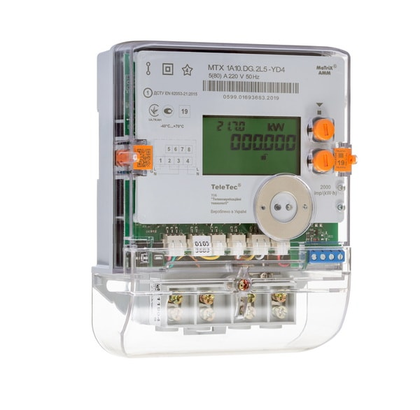

Install the device
Mount the cable on the meter body and fix it. Important! The counter's pulse output can be designed in different designs.
The meter can be sealed. Thus, it is impossible to replace the cable from the pulse output without removing the seal.
Install the device
Mount the cable on the meter body and fix it. Important! The counter's pulse output can be designed in different designs.
The meter can be sealed. Thus, it is impossible to replace the cable from the pulse output without removing the seal.
Install and activate the device
Connect the plug of the cable to the mating connector of the radio module and fix it. After connecting the radio module generates the event “Activation” and sends it.
Hold the magnet closer to its body against the specially marked area for at least a few seconds (area is located in the bottom central part of the radio module body).
Install and activate the device
Connect the plug of the сable to the mating connector of the radio module and fix it. After connecting the radio module generates the event “Activation” and sends it.
Hold the magnet closer to its body against the specially marked area for at least a few seconds (area is located in the bottom central part of the radio module body).